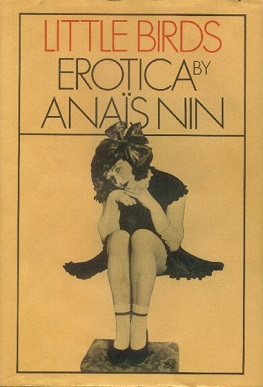

Little Birds
Író: Anaïs Nin Kiadás: 1979
Little Birds" (Kis madarak) Anaïs Nin egyik erotikus irodalmi műve, amely 1979-ben jelent meg. Az írónő ismert volt szenvedélyes és kifinomult stílusáról, és ebben a gyűjteményben is az emberi szexualitás, vágy és szerelem témáját feszegeti.
Anaïs Nin

Foglalkozása:francia-kubai író és naplóíró Született: 1903–1977
A 20. századi erotikus irodalom egyik fontos alakja volt. Híres Művei: Nin a "Delta of Venus" és a "Little Birds" című erotikus novellái miatt vált ismertté. Naplóíróként is ismert a személyes élményeiről szóló naplóiról.